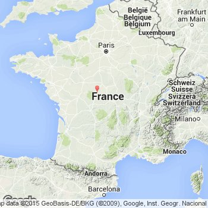
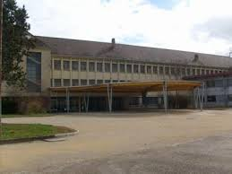
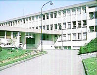

je m'appelle baptiste et j'ai bientot 16 a l'heure a laquelle j'ecrit ça
j'assaye de creer des sites internet celui-ci est mon premier et mon seul. mon but et d'apprendre et vu que c'est mon premier j'ai decidé de me presenter
ma naissance
je suis né a chateauroux le le 8 novembre 2002

apres ma naissance a chateauroux je suis parti dans ma maison a brassioux qui est un petit village a cote. cette maison ce situais au 19 rue des glycines
démènagement
alors oui en 2011 je demenage a beaune ce qui signifie que je change d'ecole donc je passe mon cm1 dans l'ecole notre dames a Beaune.
Des le premier jours je me suis fait plusieurs amis surtout un qui reste mon ami et qui l'a toujours etait au college. donc tout ce passe bien en primaire puis j'arrive au college saint coeur a beaune qui est un college privée. la cantine pour les collegiens et tout les eleves qui etait en dessous du college etait affreusement mauvaise mais la cantine pour les lyceen etait tres bonne car il y avait des pizzas ou sandwiche ou pate etc... une cantine a l'americaine. malheureusement je n'est jamais vraiment pu y manger car en seconde je suis partie au lycee Jules etienne marey a beaune

puis en première je suis parti au lycée eiffel a dijon en STI2D sin ="systeme d'information numerique" vu que ce lycée est loin de chez moi j'ai pris la
decision
de partir a l'internat de ce lycée

projet professionnel
ca va etre tres court mais de base mon projet professionnel est d'etre ingenieur mais c'est u peu ridicule car je sais pas dans qu'elle categorie d'ingenieur
ce que j'aime
j'aime beaucoup tout ce qui touche a la nourriture. donc j'aime bien cuisiner et j'aime beaucoup manger de bonne choses
j'aime beaucoup les animaux,
ce que j'aime pas du tout
j'aime pas du tout les serpents et les araignée
j'aime pas du tout la chasse et la corrida
mes reseaux sociaux